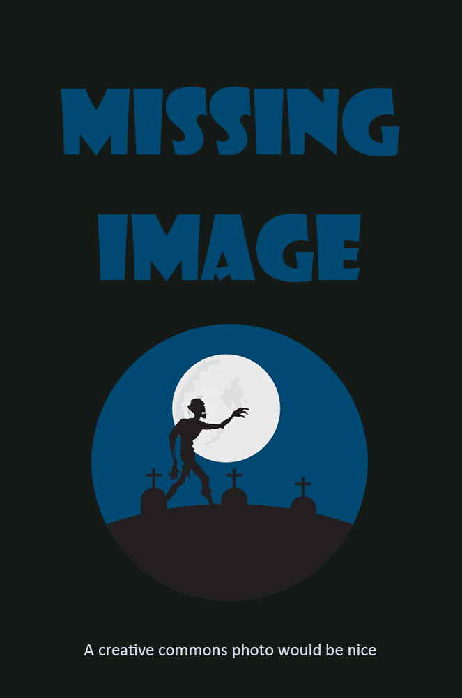

The Cabinet of Dr. Caligari aka Das Cabinet des Dr. Caligari (1920) [DEU]The Golem aka Der Golem, wie er in die Welt kam (1920) [DEU]Häxan aka Witchcraft Through the Ages (1922) [SWE, DNK]Nosferatu aka Nosferatu, eine Symphonie des Grauens (1922) [DEU]The Phantom of the Opera (1925) [Chaney][USA]Faust aka Eine deutsche Volkssage (1926) [DEU]The Cat and the Canary (1927) [USA]Dr. Jekyll and Mr. Hyde (1931) [USA] *Dracula (1931) [Browning][Lugosi, Frye][USA]Frankenstein (1931) [Whale][Karloff, Frye][USA]Freaks (1932) [Browning][USA]The Old Dark House (1932) [Whale][Karloff][USA]King Kong (1933) [Wray][Wallace][USA]The Bride of Frankenstein aka Bride of Frankenstein (1935) [Whale][Karloff, Frye, Carradine][USA]The Hunchback of Notre Dame (1939) [Zucco, Hatton][USA]The Wolf Man (1941) [Chaney Jr., Lugosi][USA]Cat People (1942) [Tourneur][USA]I Walked With A Zombie (1943) [Tourneur][USA]The Uninvited (1944) [USA]The Thing from Another World (1951) [USA]Godzilla aka Gojira (1954) [JPN]Diabolique aka Les diaboliques (1955) [FRA] *Invasion of the Body Snatchers (1956) [USA]Curse of the Demon aka Night of the Demon (1957) [Tourneur][GBR, US]The Curse of Frankenstein (1957) [Fisher][Cushing, Lee][GBR]Horror of Dracula aka Dracula (1958) [Fisher][Cushing, Lee][GBR] Black Sunday aka La maschera del demonio (1960) [Bava][Steele][ITA]Eyes Without A Face aka Les yeux sans visage (1960) [FRA, ITA] *Peeping Tom (1960) [Powell][GBR]Psycho (1960) [Hitchcock][USA]The Innocents (1961) [GBR]The Pit and the Pendulum (1961) [Corman][Price, Steele][USA]What Ever Happened to Baby Jane? (1962) [USA]The Haunting (1963) [GBR]Onibaba (1964) [JPN]Repulsion (1965) [Polanski][GBR]The Plague of the Zombies (1966) [Ripper][GBR]Night of the Living Dead (1968) [Romero][Hinzman][USA]Rosemary's Baby (1968) [Polanski][USA]

Witchfinder General aka The Conqueror Worm (1968) [Price][GBR]Don't Look Now (1973) [GBR, ITA]Flesh for Frankenstein (1973) [Kier][USA, ITA, FRA]The Exorcist (1973) [Friedkin][Smith, Baker][USA]The Wicker Man (1973) [Lee, Pitt][GBR]The Texas Chain Saw Massacre (1974) [Hooper][USA]Jaws (1975) [Spielberg][Zanuck][USA]Shivers aka The Parasite Murders aka They Came From Within (1975) [Cronenberg][Steele][CAN]Carrie (1976) [De Palma][King][USA]Suspiria (1977) [Argento][Kier][ITA]Dawn of the Dead (1978) [Romero][Foree][USA, ITL]Halloween (1978) [Carpenter][Pleasence, Curtis][USA]Alien (1979) [Weaver][GBR, USA]Cannibal Holocaust (1980) [ITL]The Shining (1980) [King][GBR, USA]An American Werewolf in London (1981) [Baker, Shostrom][GBR, USA]The Evil Dead (1981) [Raimi][Campbell][USA]A Nightmare On Elm Street (1984) [Craven][Langenkamp, Depp, Englund, Saxon][USA]The Company of Wolves (1984) [GBR]Re-Animator (1985) [Gordon][Lovecraft][Combs, Crampton]The Fly (1986) [Cronenberg][USA, CAN]Near Dark (1987) [Henriksen, Paxton][USA]Misery (1990) [King][USA]Delicatessen (1991) [FRA]The Silence of the Lambs (1991) [Hopkins, Corman][USA]Dead Alive aka Braindead (1992) [Jackson][Ackerman][NZL]Scream (1996) [Craven][Williamson][USA]Ringu (1998) [JPN]The Blair Witch Project (1999) [USA]The Sixth Sense (1999) [USA]The Others (2001) [ESP, US, FRA, ITA]High Tension aka Haute Tension aka Switchblade Romance (2003) [Aja][FRA]